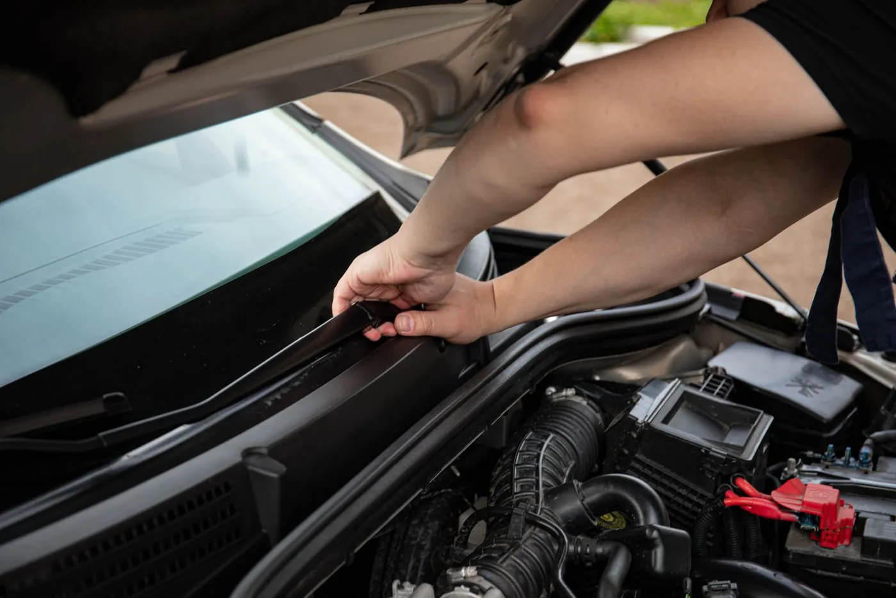

ADAS calibration in Paterson resets the camera behind your windshield after the glass is replaced, so lane-keeping assist, adaptive cruise and automatic emergency braking see the road the way the carmaker intended.
(973) 938-8879
There are two common methods. Static calibration uses printed targets set at exact distances in front of the car while a scan tool tells the camera where to look. Dynamic calibration has the car driven at set speeds on well-marked roads while the camera learns the lane lines.
Some cars need one method, some need both. The carmaker’s service procedure decides, and the scan tool confirms the camera passed before the job is done.
The camera clips into a bracket bonded to the glass. Even a clean install can sit a hair higher or lower than the old windshield, and a one-degree change at the camera becomes a big miss several car lengths ahead.
You might see names like Honda Sensing, Toyota Safety Sense, Subaru EyeSight or Hyundai SmartSense on your dash. If your car has one, plan on calibration with the new windshield. “Do I really need this?” is the question we hear most. On these cars, the carmaker says yes.
Static calibration needs a level floor, targets and setup time, so it usually costs more than dynamic. Cars that need both cost the most, and some models need the carmaker’s own software.
When the windshield is part of an insurance claim, calibration is often covered with it. Call (973) 938-8879 with your VIN for a free quote on ADAS calibration in Paterson.
| Static calibration | Dynamic calibration |
|---|---|
| Done parked, with targets set in front of the car. | Done while driving at set speeds on clearly marked roads. |
| Needs a level surface and careful measuring. | Needs dry weather and clear lane lines, which can be scarce after a snowstorm. |
| Common on many Toyota, Honda and Subaru models. | Common on many domestic and European models. |
Calibration usually follows a windshield replacement in Paterson.
If your car has a windshield-mounted camera, carmakers call for ADAS calibration after the windshield is replaced. Skipping it can leave lane-keeping or automatic braking slightly off, even with no warning light. Paterson drivers with a camera near the mirror should plan for it.
ADAS calibration in Paterson usually takes 30 minutes to about an hour, longer when a car needs both static and dynamic calibration. It is done after the windshield urethane has set.
Look for a camera housing behind the rearview mirror and features like lane-keeping assist, adaptive cruise control or automatic emergency braking. Your VIN also tells us, so share it when you call for a quote.
Call now for a free quote. We come to your home or job in Paterson.
Call (973) 938-8879 for a Free Quote